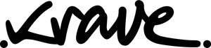

Trade Mark Journal No.2025/027 4 July 2025
UK00004222590 22 June 2025 (9,18,25,28,35)

- Class 9
- Rangefinders for golf; golf club gauges; video cameras for analyzing golf swing; apparatus for measuring the speed of golf swing; downloadable mobile applications for golf training and performance analysis.
- Class 18
- Sports bags made of leather or imitation leather; wallets and pouches; luggage; travel bags; carrying bags for sporting goods; leather accessories for golfers.
- Class 25
- Clothing for golfers; golf shirts; golf trousers; golf shorts; golf jackets; golf skirts; golf caps and hats; golf shoes; sportswear and activewear; footwear and headwear for athletic use.
- Class 28
- Golf putters; Golf tees; Golf clubs; Clubs (Golf -); Golf balls; Golf irons; Headcovers for golf clubs; Caddie bags for golf clubs; Golf tee bags; Golf bags; Golf club shafts; Golf gloves; Gloves (Golf -); Gloves for golf; Golf club bags; Shafts for golf clubs; Golf mats; Golf flags; Golf club heads; Golf club grips; Grips for golf clubs; Golf ball retrievers; Club (Golf -) hoods; Golf ball markers; Handles for golf clubs; Golf club covers; Covers for golf clubs; Golf bag carts; Grip tapes for golf clubs; Shaped covers for golf putters; Articles for playing golf; Golf bag trolleys; Head covers for golf clubs; Golf practice nets; Nets for practising golf; Golf club head covers; Covers (Shaped -) for golf clubs; Shaped covers for golf clubs; Golf practice apparatus; Covers for golf club heads; Golfing gloves; Golf training aids; Golf bag tags; Golf divot repair tools; Golf swing alignment apparatus; Golf flags [sports articles]; Trolley bags for golf equipment; Stands for golf bags; Covers (Shaped -) for golf club heads; Tennis balls; Fitted head covers for golf clubs; Tools (Divot repair -) [golf accessories]; Divot repair tools [golf accessories]; Divot repair tools being golf accessories; Golf bags, with or without wheels; Golf bags with or without wheels; Lawn tennis racquets; Covers (Shaped -) for golf bags; Lawn tennis rackets; Golf bag tags of leather; Tennis ball retrievers; Tennis racquets; Tennis rackets; Rackets [for tennis]; Polo balls; Bag stands for golf bags; Balls for sports; Sports balls; Baseball batting tees; Balls for playing sports; Tennis uprights [sports equipment]; Balls for racket sports; Racketball balls .
- Class 35
- Online retail services relating to golf equipment; online retail services relating to golf apparel; online retail services relating to sportswear; online retail services relating to golf accessories; advertising and brand promotion services in the field of sportswear and golf lifestyle.
Kaddie Limited